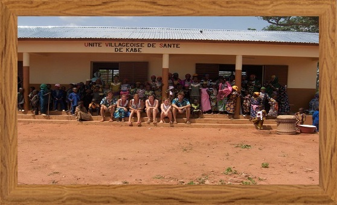
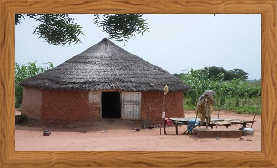
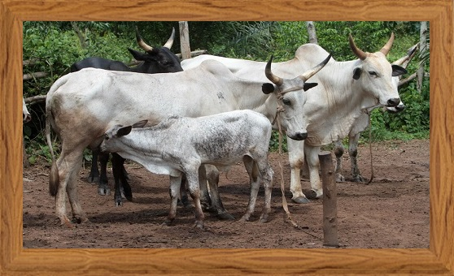
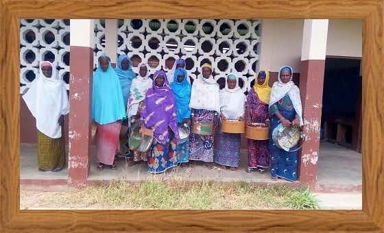
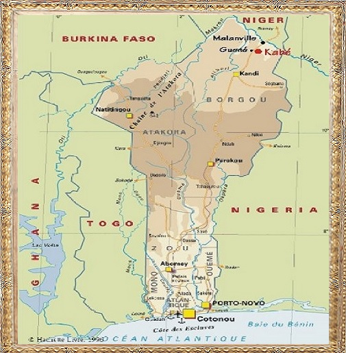

Le village de Kabé
Kabé regroupe environ 300 habitants peuls de tradition nomade, vivant essentiellement de l’élevage de leurs troupeaux de vaches et de la culture du mil.
Le village est situé près d’un cours d’eau et possède un puits ainsi que des terres cultivables.
Ces conditions ont incité les Peuls à se sédentariser, chaque famille construisant son campement.
Kabé se situe à 9 km de Guéné, petite ville où l’on peut trouver quelques commerçants, un marché chaque Jeudi, ainsi qu’un dispensaire.
Il faut ensuite parcourir 30 km pour arriver à Malanville, sous-préfecture de la région, où se situe l’hôpital, le téléphone, la poste…
L’isolement du village est donc un problème dans la vie quotidienne : il faut se rendre à Guéné, à pied; la route n’est pas praticable par un taxi lorsqu’il est nécessaire de transporter un malade …
La langue peule est minoritaire dans la région où le dendi est le plus parlé ; quant au français, langue officielle, les anciens ne la connaissent pas, n’ayant pas été scolarisés.
La barrière de la langue est un handicap majeur pour les habitants puisqu’ils ont beaucoup de difficultés à défendre leurs intérêts.
En effet, certaines populations avoisinantes ont tendance à profiter de leur ignorance pour les démunir de leurs terres ou s’enrichir de taxes non réglementaires.
Ainsi l’alphabétisation est un enjeu important pour donner au village la possibilité de se développer, et aux Peuls l’occasion de mieux s’intégrer à la population locale.
Actuellement, nous sommes très étonnés, agréablement, d’entendre les plus jeunes parler le français !
